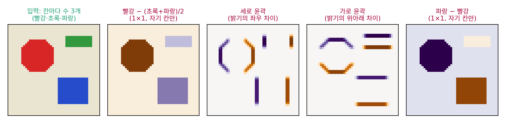

채널: 한 칸에 여러 특징을 함께 담는다
지금까지는 칸마다 수가 하나인 흑백 그림을 다뤘다. 컬러 그림은 칸마다 빨강·초록·파랑 세 수가 있다. 또 커널 하나는 출력 지도 하나를 만드는데, 그림에서 찾고 싶은 것은 세로 윤곽, 가로 윤곽, 빨간 물체처럼 여럿이다. 커널 여러 개를 걸면 출력도 칸마다 수가 여러 개가 된다. 칸마다 수가 여러 개인 입력에 칸마다 수가 여러 개인 출력을 내려면 커널을 어떻게 짜야 할까?
칸마다 수 세 개를 함께 읽기
빨간 원, 초록 띠, 파란 네모가 있는 컬러 그림 하나에서 네 가지를 뽑아 보자. 첫째와 넷째는 이웃을 보지 않고 자기 칸의 세 수만 섞는다. 「빨강 − (초록 + 파랑)/2」는 빨간 원에서 크고, 「파랑 − 빨강」은 파란 네모에서 크다. 칸 하나의 세 수에 비율 세 개를 곱해 더하는 것이니, 칸마다 같은 MLP 층 하나를 건 것과 같다. 둘째와 셋째는 밝기에 3 × 3 윤곽 커널을 건 것이다.

칸마다 놓인 수의 묶음에서 한 자리, 곧 빨강·초록·파랑 하나하나나 출력 지도 하나하나를 채널 (칸마다 놓인 특징 하나 / channel)이라 한다. 입력이 채널 3개, 출력이 채널 4개인 셈이다. 출력 채널 하나를 만드는 커널은 입력 채널마다 3 × 3씩, 곧 3 × 3 × 3 = 27개의 수를 가진 상자이고, 출력 채널 수만큼 그런 상자가 있다.
출력 한 칸의 계산을 다시 읽어 보자. 입력에서 그 칸을 가운데로 한 k × k 이웃의 모든 채널 값, 곧 Cink²개의 수를 한 줄로 펴고, 거기에 Cout × Cink² 가중치 행렬을 곱하고 치우침을 더한다. MLP 층 하나와 똑같다. 다른 점은 둘뿐이다. 이웃만 보고, 모든 칸이 같은 행렬을 쓴다. 이 장의 제목 「이웃만 보는 MLP」가 그 뜻이다. 코드로 확인하자.
import torch
torch.manual_seed(0)
x = torch.randn(1, 4, 8, 8) # 그림 하나: 채널 4개, 가로세로 8칸
conv = torch.nn.Conv2d(4, 8, 3, padding=1) # 채널 4 → 8, 3×3 커널, 바깥은 0으로 채움
print(sum(p.numel() for p in conv.parameters())) # 가중치 8×4×3×3 + 치우침 8
patches = torch.nn.functional.unfold(x, 3, padding=1) # 칸마다 3×3 이웃의 모든 채널 값을 한 줄로: (1, 36, 64)
Wm = conv.weight.reshape(8, -1) # 가중치 행렬 (8, 36)
y = (Wm @ patches + conv.bias[:, None]).reshape(1, 8, 8, 8) # 칸 64개 모두에 같은 행렬을 곱한다
print(tuple(patches.shape), tuple(Wm.shape), f"{(y - conv(x)).abs().max().item():.1e}")
# 296
# (1, 36, 64) (8, 36) 3.6e-07
칸 64개 각각에서 36개의 수를 펴 같은 (8, 36) 행렬을 곱한 결과가 합성곱 층의 출력과 소수 일곱째 자리까지 같다(차이는 부동소수점 반올림이다).
ML에서: 디퓨전 신경망의 첫 층
Stable Diffusion 1.x 의 잡음 제거 신경망은 512 × 512 그림을 가로세로 64칸, 칸마다 수 4개로 줄여 둔 입력을 받는다(어떻게 줄이는지는 뒤에서 다룬다). ComfyUI 의 모델 설정에서 이 신경망의 입력 채널은 4, 기본 채널 수는 320이고, 첫 층은 채널 4개를 320개로 넓히는 3 × 3 합성곱이다. 매개변수는 320 × (4 × 9 + 1) = 11,840개다. 같은 일을 전부 잇는 MLP 층으로 하면, 입력 64 × 64 × 4 = 16,384개와 출력 64 × 64 × 320 = 1,310,720개를 모두 이어 가중치가 214억 7,483만 6,480개다. 대신 합성곱의 출력은 칸 4,096개마다 320개의 특징을 담은, 입력보다 80배 많은 수가 된다. 수를 줄이는 것은 매개변수이지 계산할 값이 아니다.
문제 10. 도시마다 같은 계산식
기상청이 도시마다 세 수(기온 °C, 습도 %, 풍속 m/s)를 받아 「외출 지수」 = 기온 + 0.1 × 습도 − 0.7 × 풍속을 낸다고 하자(이 책에서 지어낸 계산식이다). 서울 (24, 60, 3), 대전 (26, 70, 1), 부산 (22, 80, 6)이다. (가) 세 도시의 외출 지수는? (나) 계산식의 비율과 덧셈 상수까지 데이터로 배운다면 지수 하나에 몇 개의 수를 배워야 하는가? 지수가 둘이면? (다) 자기 도시뿐 아니라 지도에서 둘레 3 × 3칸 도시의 세 수를 모두 쓰는 지수라면?

(가)는 서울 24 + 6 − 2.1 = 27.9, 대전 32.3, 부산 25.8이요. (나)는 비율이 셋이니까 3개요. 지수가 둘이면 6개.

습도도 바람도 0인 날의 지수는 어디서 정해지죠?

아, 덧셈 상수요. 지금 식은 0이지만 배운다면 하나 더 있어야 해요. 지수 하나에 4개, 둘이면 8개예요.

(다)는 칸 아홉 개에 세 수씩 27개, 상수까지 28개. 이게 채널 3개짜리 입력에 3 × 3 커널을 건 출력 채널 하나랑 같은 셈이네. (나)는 자기 칸만 보는 1 × 1이고.

도시 수가 늘면 배울 수는요?

그대로예요. 모든 도시가 같은 식을 쓰니까요. 도시가 1,000개여도 28개.

학과 사무실이 학생마다 다른 장학금 공식을 쓰지 않고, 학점·출석·봉사 시간에 같은 비율을 곱해 점수를 내는 거랑 같네요.
문제 11. 컬러 그림을 받는 첫 층
(가) 컬러 그림(채널 3개)을 받아 채널 16개를 내놓는 3 × 3 합성곱 층의 매개변수는 몇 개인가? (나) 그 뒤에 채널 16개를 받아 16개를 내놓는 1 × 1 합성곱 층을 붙이면 매개변수는 몇 개인가? (다) 1 × 1 합성곱 층은 무엇과 같은가?
(가)는 3 × 3 = 9에 채널 3과 16을 곱해서 432개요.
출력 채널마다 하나씩 더해지는 것이 있었죠?
치우침이요. 16개 더해서 448개예요.
(나)는 16 × (16 × 1 + 1) = 272개. 1 × 1이면 이웃을 하나도 안 보잖아. 그럼 그게 합성곱이긴 해?

칸 하나의 계산을 식으로 적어 봐요.

그 칸의 16개 수에 16 × 16 행렬을 곱하고 치우침 16개를 더해요. 칸마다 같은 행렬로요. 그러니까 1 × 1 합성곱은 칸마다 같은 MLP 층(활성 함수 앞까지)을 거는 거예요. 이웃은 안 보고 채널끼리만 섞는 거고요.
3 × 3만 쌓았다는 시모니언과 지서먼도 논문에서 1 × 1 층을 넣은 신경망을 함께 시험했대요. 수용 영역은 그대로 두고 채널끼리 섞는 판정을 하나 더 하려던 거겠네요.

그래요. 3 × 3은 이웃을 모으고, 1 × 1은 채널을 섞어요. 둘을 엮으면 이웃을 보는 일과 특징을 섞는 일을 나눠 맡길 수 있어요.
선형대수 수업의 블록 대각 행렬 같아요. 그림의 모든 칸을 한 줄로 펴면, 1 × 1 층은 같은 16 × 16 블록이 칸 수만큼 대각선에 늘어선 큰 행렬이니까요.
문제 12. 마지막 층과 전부 잇기
Stable Diffusion 1.x 의 잡음 제거 신경망 마지막 층은 채널 320개를 받아 입력과 같은 채널 4개로 돌려놓는 3 × 3 합성곱이다. 입력 크기는 가로세로 64칸이다. (가) 이 층의 매개변수는 몇 개인가? (나) 같은 입출력을 전부 잇는 층으로 만들면 가중치는 몇 개인가? (다) (가)와 (나) 가운데 그림 크기를 가로세로 128칸으로 키울 때 달라지는 것은?
(가)는 첫 층 11,840과 같겠죠. 4와 320이 자리만 바뀌었으니까요.
치우침은 어느 쪽 채널 수만큼 있죠?

출력 채널이요. 첫 층은 출력이 320이라 치우침이 320개였는데, 여기는 4개예요. 4 × (320 × 9 + 1) = 11,524개요. 가중치 11,520개는 같고 치우침만 달라요.
(나)는 64 × 64 × 320 = 1,310,720개를 64 × 64 × 4 = 16,384개에 모두 이으니까 첫 층과 같은 214억 7,483만 6,480개.
(다)는요?
합성곱은 그대로 11,524개예요. 커널이 그림 크기와 상관없으니까요. 전부 잇는 층은 입력과 출력이 각각 네 배가 되니 16배, 3,436억 개 가까이 돼요. 128칸 그림으로는 아예 다른 층을 새로 배워야 하고요.

64칸에서 배운 합성곱 신경망은 128칸 그림에도 그대로 걸 수는 있는 거네요. 잘 되는지는 별개로요.
그래요. 걸 수 있다는 것과 잘 된다는 것은 다른 물음이에요. 넓어진 그림에서 멀리 떨어진 칸들의 관계를 보는 일이 수용 영역의 문제였으니까요.
조별 과제 양식을 한 장짜리로 만들어 두면 조원이 늘어도 양식은 그대로인 것처럼요.